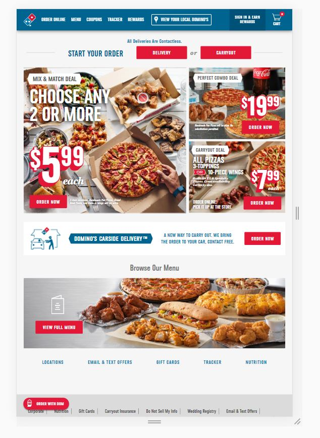

Guitar Center
https://www.guitarcenter.com/

The consistency of how products are displayed shows how repititon makes it easy to follow the content on a webpage.
BYU-Idaho
https://www.byui.edu/

There is good, adequate white space between images and sections on the mobile site to make the content not feel too cluttered.
Domino's
https://www.dominos.com/

Every action button such as Carryout, Delivery, etc. are larger and more obvious and accessible.